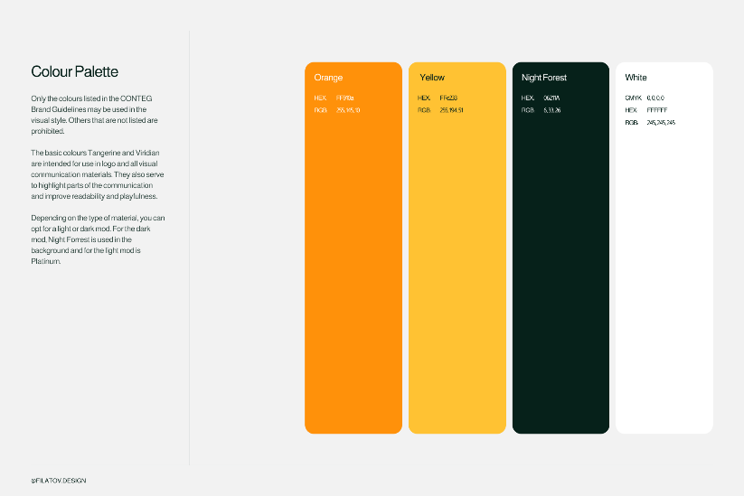
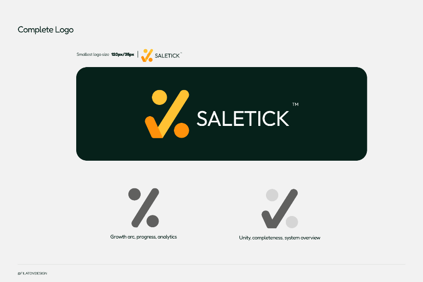
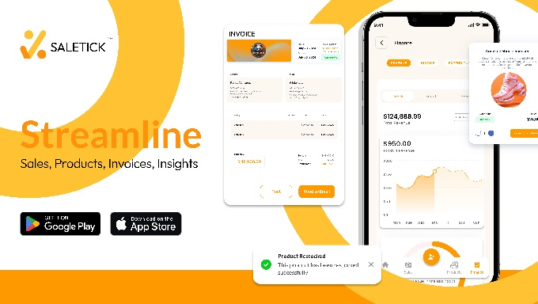
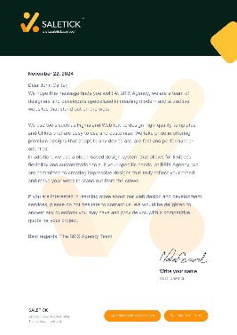
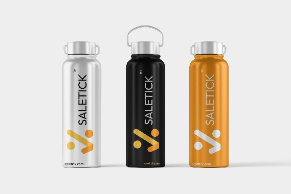
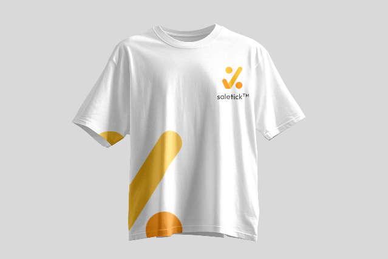

Making a WhatsApp business tool feel like a brand Nigerian entrepreneurs actually want to belong to.
SaleTick is Nigeria’s smartest WhatsApp business management app — built for the retailer, the boutique owner, the pharmacy, the provision store. It handles sales recording, inventory, invoices, barcode scanning and AI insights, all from inside WhatsApp. My job was to build a brand identity and motion design system that made all of that feel as sharp and trustworthy as the product behind it.
The Intro
SaleTick operates at the intersection of two things Nigerians already know intimately: small business hustle and WhatsApp. The product removes the friction that kills small retail — forgotten sales, miscounted stock, unprofessional receipts, zero visibility into performance. It does all of it through an interface every Nigerian already has on their phone.
The product was solid. What it needed was a visual and motion identity strong enough to match the ambition — something that could speak to over 5,000 businesses and counting, from Ikeja to Port Harcourt, across every kind of retail vertical.
The Challenge
The Nigerian small business space is crowded with tools that feel imported — designed for a different market, a different infrastructure, a different way of working. SaleTick was built differently from the ground up, and the brand had to communicate that from the first impression.
The identity needed to do several things simultaneously. It had to feel modern and trustworthy enough for business owners who’ve been burned by unreliable software before. It had to feel warm and accessible enough for the trader who’s never used a business tool beyond a notebook. And it had to carry enough energy to cut through in the social feeds where Nigerian entrepreneurs actually spend their time.
Specific problems on the table:
- Build a brand identity from scratch with no existing visual system to reference.
- Create a motion language that felt premium but grounded in the Nigerian business context.
- Design assets flexible enough to work across WhatsApp, social media, and product marketing.
- Communicate a genuinely complex product — AI, barcode scanning, real-time analytics — without making it feel intimidating.
- Make "Let Your Business Speak" feel like more than a tagline — make it feel like a promise the brand lives up to.
Kick Off
The brief centred on one truth: SaleTick’s users are busy. They’re on the shop floor, they’re managing staff, they’re with customers. The brand couldn’t afford to be complicated or slow — every touchpoint had to communicate value immediately.
We grounded the creative direction in that reality. The identity would be clean, confident, and energetic — a brand that moves at the pace of the businesses it serves. Motion work would prioritise clarity over spectacle: quick, purposeful animations that demonstrate the product’s core promise without asking the viewer to slow down.
Key decisions made at kick-off:
- Brand colour anchored around a bold primary with strong contrast for accessibility across all screen types.
- Typography built for legibility at small sizes — this brand lives on phone screens first.
- Motion system designed for social-first formats: 15-second product demos, feature highlights, announcement pieces.
- Visual language rooted in the Nigerian business context — familiar, energetic, unmistakably local without being parochial.


The Process
The work split across two tracks: brand identity and motion design.
On the brand side, the starting point was the tagline: "Let Your Business Speak." That phrase carries everything — empowerment, clarity, voice. The identity had to embody that. Logo exploration focused on a mark that was bold enough to stand alone but clean enough to sit comfortably inside WhatsApp’s visual environment. Colour, type, and icon work all followed from that foundation.
The motion track was built around the product’s core use cases: recording a sale, checking stock, generating a receipt, getting an AI insight. Each motion piece was designed to show the product doing something real — not abstract explainers, but direct demonstrations of the features that matter most to Nigerian retail owners. Short, punchy, built for rewatch.
The two tracks stayed in constant conversation throughout. A brand decision would shape how a motion piece opened. A motion constraint would feed back into how a logo lockup was used. The goal throughout was consistency one identity, expressed confidently across every format.
Brand Identity
SaleTick’s identity was built to feel like a brand that belongs in the same conversation as the businesses it serves: serious, energetic, and unmistakably Nigerian.
Colour: The brand palette leads with a strong primary that signals energy and growth — a colour the target audience already associates with business communication through WhatsApp’s established presence in their daily workflow. Supporting tones were chosen to maintain clarity and contrast across both dark and light contexts, from in-app UI to social graphics.
Typography: Type choices prioritised legibility and confidence. Display weights carry the brand voice — bold, direct, no-nonsense. Body and UI weights keep things clear and readable at the sizes that matter most on a phone screen. The typographic system scales cleanly from a business card to a billboard.
Brand Voice & Motion Principles: SaleTick talks like a smart friend who knows business — not a corporate tool, not a startup trying too hard. The brand voice is direct, warm, and confident. Motion follows the same rules: no unnecessary flourishes, no animations that outlast their usefulness. Every piece of motion is in service of a single idea, communicated fast and clearly.




Motion Graphics
A curated selection of motion pieces created to showcase the SaleTick product. Built for social-first distribution — each piece demonstrates a core product feature in a format designed to stop the scroll and communicate value in under fifteen seconds.
Closer
"Victor’s designs are on a league of their own. Definitely one to keep on the team."
SaleTick is exactly the kind of project that reminds me why this work matters. It’s not a concept or a pitch deck exercise — it’s a real product being used by real business owners across Nigeria, every single day, to run their livelihoods more effectively.
Getting to build the brand and motion identity for something like that carries weight. Every decision — from the logo mark to a fifteen-second motion clip — is something a business owner will see and either trust or not. I’m proud of the work, and I’m proud of what SaleTick is building.